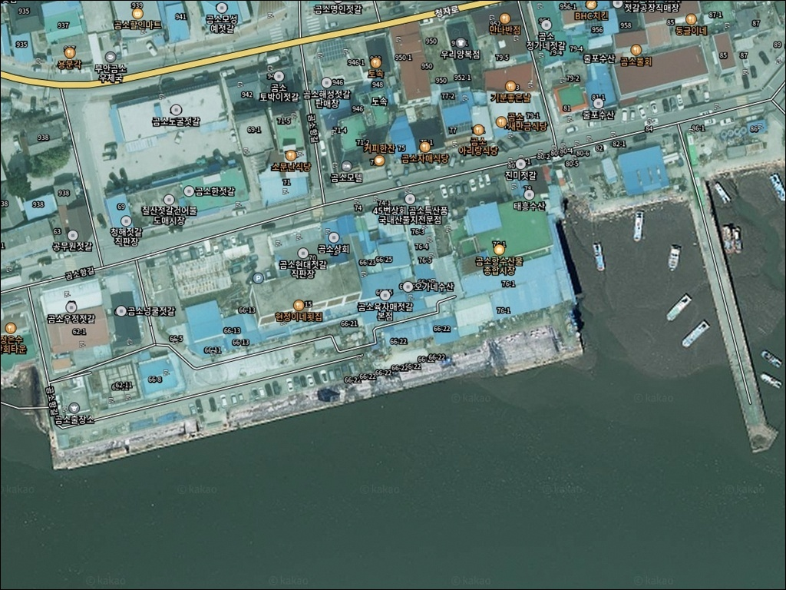
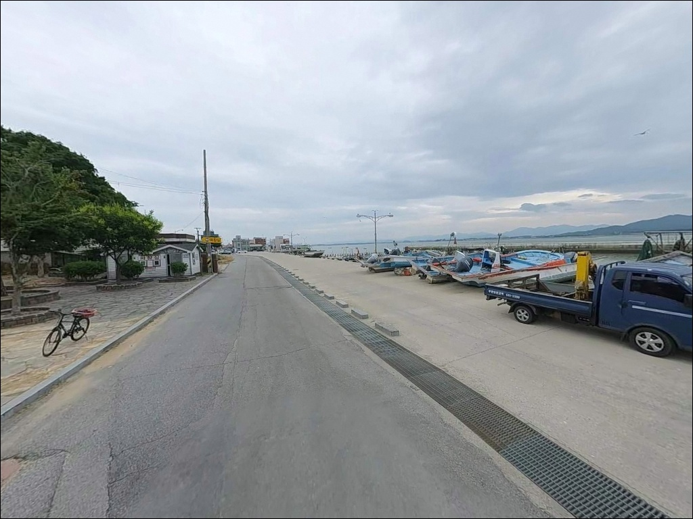
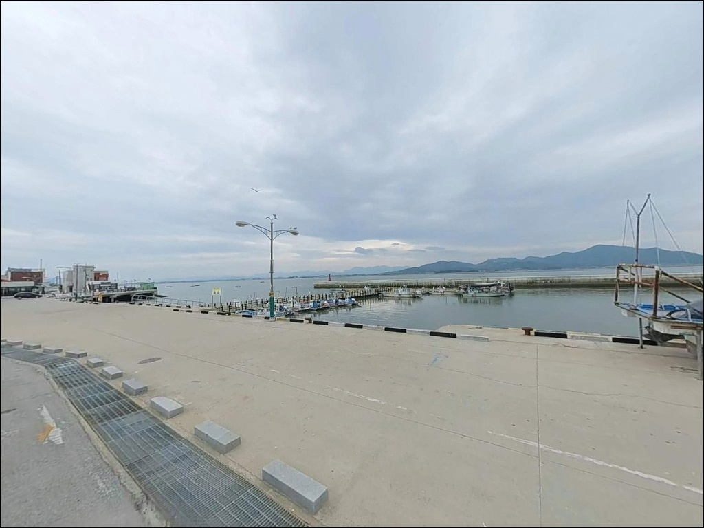
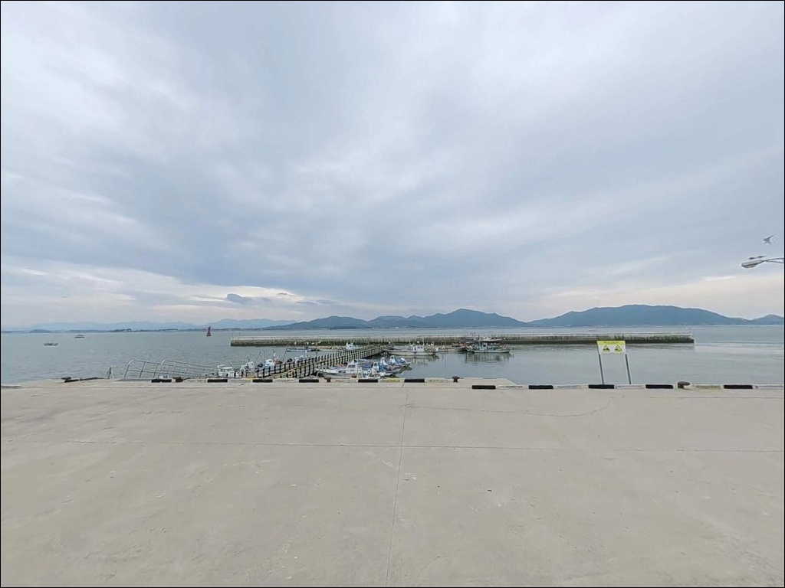
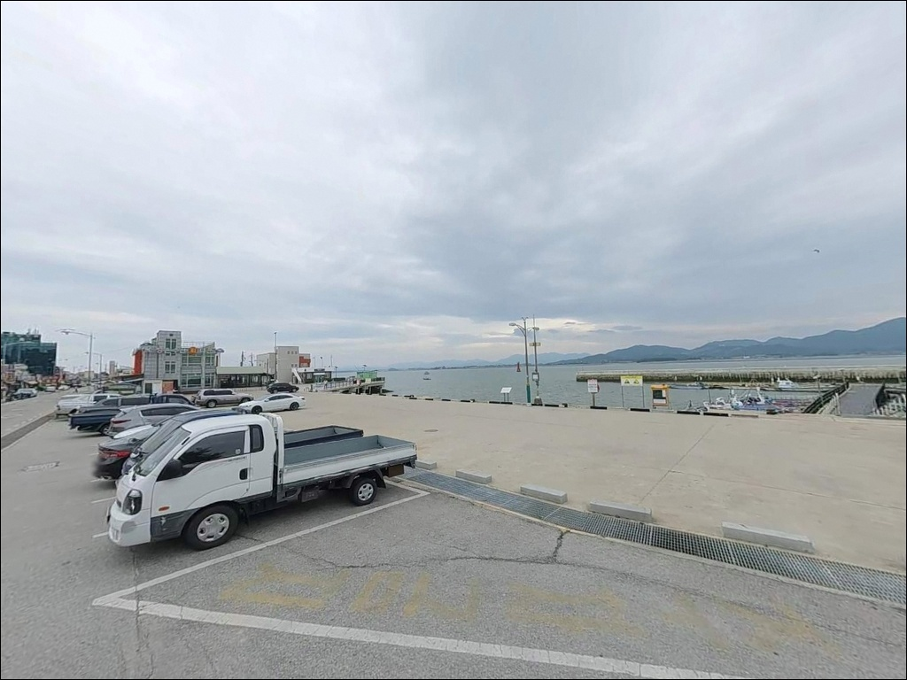
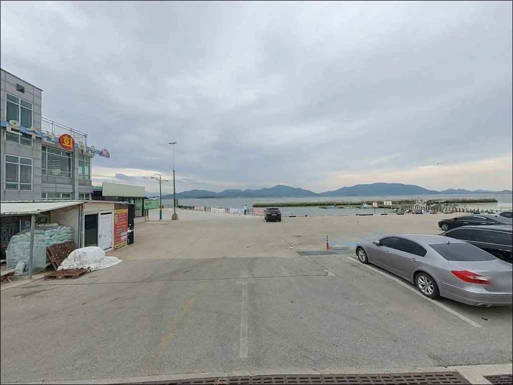
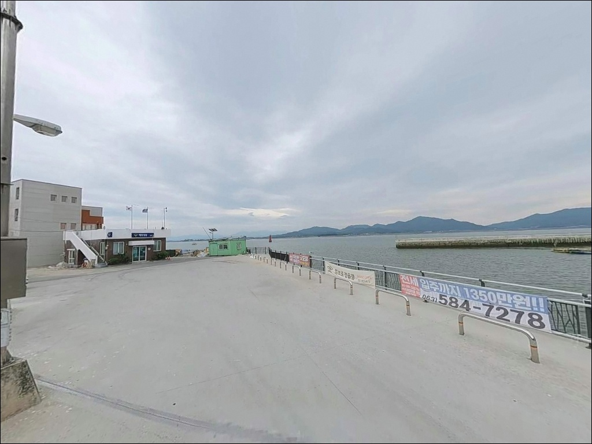
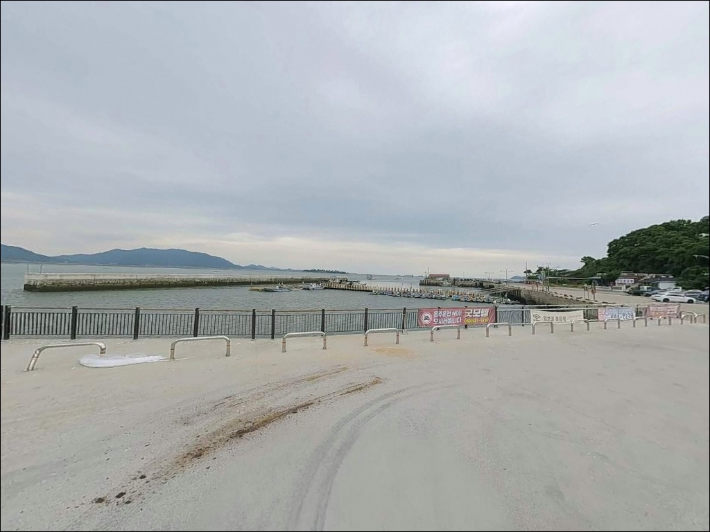
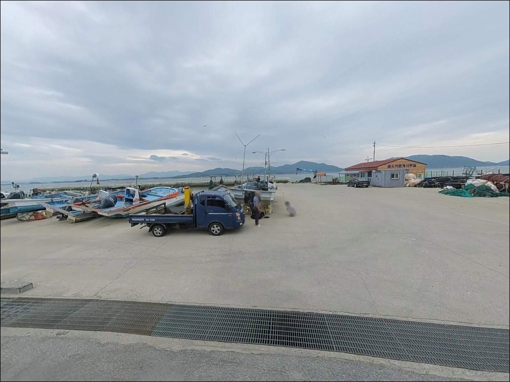

곰소항, 전북 부안군 바다와 가장 가까이 머무는 차박, 낚시 해안 명소
이 페이지에는 광고(제휴 링크 포함)가 있으며, 광고 링크를 통해 구매하면 운영자가 판매 수익 또는 수수료를 받을 수 있습니다. 포인트 사진: 카카오맵 스카이뷰·로드뷰. 이 페이지의 지도·사진 이미지는 카카오맵의 실제 서비스 이미지와 다를 수 있습니다.


포인트 안내
곰소항
전북 부안군 진서면 곰소리 843
물때 확인 없이 곰소항을 찾으면,
방파제 아래 갯벌이 드러난 상태로
낚시 자리를 찾지 못하는 상황을
맞을 수 있습니다.
줄포만 내측 갯벌형 지형 특성상,
간조 전후에는 수심이 크게 낮아지는 구간이 생겨
채비를 넣을 공간 자체가 줄어드는 구조입니다.
이 글은 곰소항의
방파제 지형과 진입 환경,
물때 기반 낚시 여건,
차박 체류 조건에 집중합니다.
조황 단정이나 특정 어종 보장은
이 글의 범위에 포함되지 않습니다.

1. 진입 동선과 주차 여건
곰소항은 30번 국도에서 접근하는 구조로,
도로 포장 상태가 양호하고 급경사 구간이 없습니다.
관광지와 어항이 결합된 성격이라
항구까지 차량 진입이
어렵지 않은 수준입니다.
대형 SUV나 캠핑카도
회차에 큰 어려움은 없는 구조입니다.
주차 공간은 공식적으로 이용 가능한
주차시설이 존재하는 것으로 확인됩니다.
항 물양장 주변 공터,
방파제 초입 공간이 주요 후보 구간입니다.
다만 주말과 성수기에는
젓갈시장 관광 차량이 몰려
혼잡이 심해지는 편입니다.
평일 방문이 주차 여건 확보에 유리합니다.
하루 130여 척의 어선이 드나드는
활성 조업항이라는 점도 기억해야 합니다.
위도행 여객선도 이 항에서 출발하므로,
선박 항로와 겹치지 않는 자리 선택이
낚시의 기본 전제입니다.

2. 차박 환경과 야간 체류 여건
곰소항 인근에는
젓갈시장·수산시장·식당·카페가 밀집해 있어
야간에도 가로등과 상가 조명이 이어지는
환경입니다.
완전한 노지 차박보다
개방형 주차장 체류에 가까운 분위기이며,
프라이버시 측면에서는 제한적인 조건입니다.
조업 어항 특성상 이른 새벽부터
어선 출입이 시작됩니다.
야간부터 차박을 이어갈 계획이라면
이 점을 감안해 취침 위치를 정하는 것이 좋습니다.
낚시와 차박을 함께 즐기되
완전히 조용한 환경을 원하는 분이라면,
약 400m 거리의 바다야영장을
먼저 살펴보는 편이 실용적입니다.


3. 주변 편의시설 및 인프라 현황
곰소항 인근 편의시설은
서해안 어항 기준으로 상당히 넉넉한 편입니다.
수산물 종합시장은 약 40개 점포가
풀치·박대·서대·왕새우·꽃게·백합 등을
취급하는 규모입니다.
매월 둘째 주 화요일이 정기 휴무이므로
방문일과 겹치는지 미리 확인하는 것이 좋습니다.
농협하나로마트 진서농협본점이
직선거리 약 500m 거리에 있어
출조 전 식료품과 기본 소품 보충이 가능합니다.
방파제 옆 나룻산공원은
낙조 전망대와 산책로를 갖춘 소공원으로,
낚시 전후 휴식 공간으로 활용하기 좋은 자리입니다.
식당과 카페가 항 주변에 다수 분포하고 있어
식사 해결에 어려움이 없는 환경입니다.
다만 편의점 등 기타 시설은
현장에서 직접 지도 앱으로 확인하는 편이
정확합니다.

4. 물때를 모르면 반나절이 날아가는 포인트
곰소항 방문 전에 가장 먼저 할 일은
물때 확인입니다.
바다타임에서 "곰소 물때" 또는 "위도 물때"로
조석 정보를 먼저 확인하고,
초들물 전후 또는 만조 전후를 노려
출발 시각을 맞추는 것이 기본 전략입니다.
간조 시에는 뻘이 드러나
낚시 자리가 크게 줄어드는 구조입니다.
뻘바닥 지형이 주를 이루는 항이라
봉돌 선택에도 신경을 써야 합니다.
납봉돌이 바닥에 박히는 현상이 잦아
계란형 또는 납판 형태의 봉돌이
이 지형에 잘 맞습니다.
청갯지렁이를 기본 미끼로 준비하면
망둥어·붕장어·숭어를 폭넓게 공략할 수 있는
채비 구성이 됩니다.
조업 어항이라 어선 출입이 잦습니다.
선착장과 물양장 작업 구역에
낚싯줄이 걸리지 않도록 자리를 잡는 것이
기본 매너입니다.
야간 낚시를 계획한다면
방파제 미끄럼 방지 신발과 헤드랜턴,
구명조끼는 반드시 챙겨야 합니다.

5. 지형 기반 낚시 여건 분석
곰소항 방파제는 138m 규모의 소형 항입니다.
물양장 80m·선착장 20m·호안 60m로
구성된 지방어항(제2종) 구조이며,
항내 공식 수심은 4m로 확인됩니다.
다만 서해 조수간만의 차를 감안하면
간조 시에는 일부 구간이
수심이 크게 낮아지는 상황이 발생합니다.
바닥은 뻘 성격이 강한 갯벌형 구조입니다.
수산물시장에서 망둥어와 박대·서대류가
거래되는 것이 이 지형의 성격을
잘 반영합니다.
줄포만 내측에 위치해 외해 파도는 적지만,
낙조류 우세 구조라
물이 빠지는 시간대에 흐름이 강해지는
패턴을 가지고 있습니다.
방파제 끝단 방향은 항구 입구 쪽으로
수심 변화 가능성이 있는 구간입니다.
원투채비를 멀리 보냈을 때
바닥 지형 변화를 느낄 수 있는
자리입니다.
내항 물양장 구간은 발판이 평탄하고
접근성은 좋지만,
어선 계류 동선과 겹치지 않는 위치를
먼저 확인해야 합니다.
출조 전 최신 조황은 꼭 검색해 보시기 바랍니다.


6. 곰소항에 어울리는 낚시 스타일
이 포인트에서 가장 잘 맞는 낚시는
원투낚시입니다.
뻘바닥 내만 구조에서 청갯지렁이 미끼로
망둥어·붕장어를 노리는 방식이
기본 접근이 됩니다.
방파제 끝단 방향으로 채비를 멀리 보내면
수심 변화 구간을 탐색할 수 있는
구조입니다.
찌낚시도 이 포인트에 어울리는 방식입니다.
숭어는 곰소만 일대에서 거래되는 주요 어종 중 하나로,
들물이 시작되는 타이밍에
내항 쪽에서 빵가루 미끼를 활용한
찌낚시 방식이 맞는 구조입니다.
조류가 살아나는 물돌이 전후가
반응이 오는 타이밍입니다.
루어낚시는 제한적이지만
방파제 석축 주변이나
물양장 모서리 구간에서
소형 웜 루어로 근거리 탐색을
시도해볼 수 있는 구조입니다.
다만 갯벌 뻘바닥이 주를 이루는 지형이라
루어 효율은 다른 방식보다 낮은 편임을
미리 감안하는 것이 좋습니다.
서해 내만 특성상 에깅보다
원투와 찌낚시를 메인으로 두는 구성이
현실적인 접근입니다.

7. 대안 포인트 및 플랜 B 동선
곰소항 물때가 맞지 않거나
뻘이 심하게 드러난 상황이라면
첫 번째 대안은 격포항입니다.
부안군 변산면에 위치한 국가어항으로,
곰소항에서 약 10~15km 거리입니다.
외해에 노출된 구조로 수심이 깊은 편이며,
북방파제 외항 쪽 꺾임 지점이
주요 포인트 구간으로 알려져 있습니다.
격포항은 봄에 주꾸미,
가을에 전어가 특히 활발한 시즌을 형성하며,
내항에서 학공치·숭어·붕장어 조황
언급이 있는 항입니다.
외항 테트라포드 주변과 내항 석축 양쪽에서
루어와 원투 모두 대응이 가능해
곰소항보다 낚시 방식 선택 폭이 넓은 편입니다.
다만 채석강·적벽강과 인접해
관광 인파가 있을 수 있는 점도 감안해야 합니다.
줄포만 내 다른 항구와 방파제도
상황에 따라 이동 후보로 두기 좋습니다.
같은 만 구조라 수심과 조류 패턴이 유사하지만,
자리 여건이 달라
여러 포인트를 돌며 탐색하는 방식도
이 권역에서 합리적인 출조 전략입니다.
이동 전 조황 검색으로
현장 여건을 먼저 파악하는 편이 효율적입니다.

원투 한 대 펴두고
젓갈 한 통 사 오는 부안의 항구
원투낚시나 생활낚시를 즐기는 낚시인이라면
곰소항의 뻘바닥 지형과 내만 조류 구조는
크게 낯설지 않은 환경입니다.
물때만 잘 맞추면
망둥어·붕장어·숭어를 공략할 수 있는
조건을 갖춘 항이며,
주변 수산시장과 젓갈단지가
출조의 덤이 되는 독특한 포인트입니다.
반면 루어나 에깅이 메인인 낚시인에게는
뻘바닥과 내만 구조 특성상
다소 아쉬운 여건일 수 있습니다.
이 경우 격포항을 기점으로 잡고
곰소항을 보조 포인트로 조합하는 방식이
이 권역에서 더 폭넓은 출조가 됩니다.
주말 관광객이 많은 항구라
조용한 단독 차박을 기대하기는 어렵지만,
낚시 후 수산시장에서 장을 보고
바다야영장에서 하룻밤 머무는
여행 방식이라면
곰소항은 충분히 기억에 남는 항구입니다.